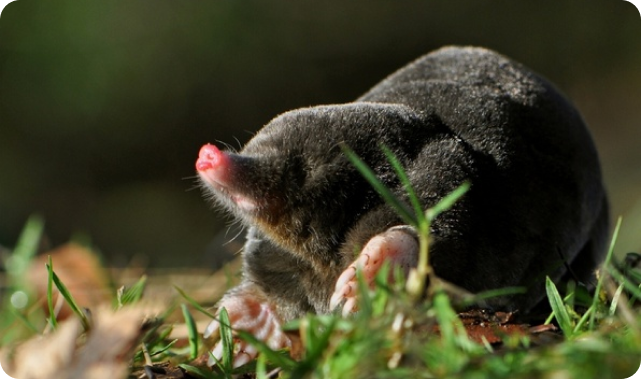
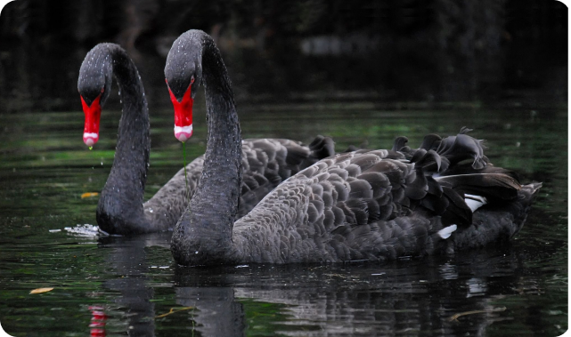
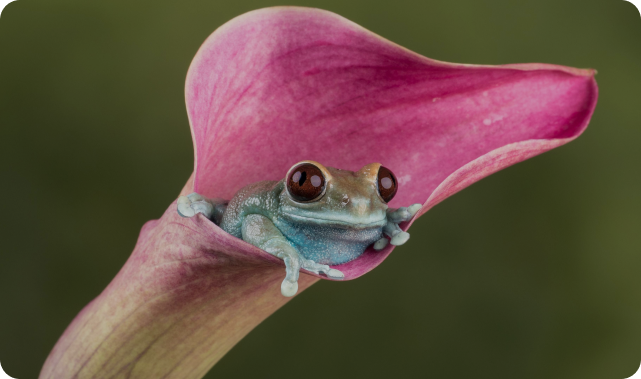

Kelly Slab, Roboto Slab
Крот
Крот, слепая тварь, сказал однажды
своей матери: «Я прозрел!»
Она решила проверить и дала ему
зернышко ладана, спросив, что это такое?
Ответил крот, что это — камешек.
А она ему: «Дитя мое, не только зрения
ты не получил, но еще и нюх потерял!»
Ubuntu, Nunito
Лебедь
Один богач выкармливал гуся и лебедя, но с
разной целью: гуся — для стола, лебедя —
ради пения.
А когда пришло время принять гусю ту участь,
для которой его растили, была ночь, и нельзя
было распознать, который кто: и вместо гуся
схватили лебедя.
Но запел лебедь, почуяв смерть, и пение это
обнаружило его природу и спасло от гибели.
Bitter, Merriweather
Лягушки
Две лягушки, когда пересохло их болото,
пустились искать, где бы поселиться.
Пришли они к колодцу, и одна из них
предложила, недолго думая, туда и
прыгнуть.
Но другая сказала: «А если и здесь вода
пересохнет, как нам оттуда выбраться?»